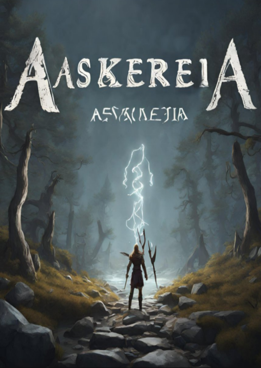

Computerspiel mit Unreal Engine 5
Das Werk "Aaskereia: Odin’s Hunt" entstand im Rahmen des Moduls „Agile Gameentwicklung“. Es handelt sich hierbei um ein 3D Hunting Adventure Game im nordischen Mythologie Stil, welches mithilfe der Unreal Engine 5 entwickelt wurde. Da keine bestimmten Anforderungen vorgegeben wurden, musste sowohl das Thema als auch die Idee selbst entwickelt werden.
Das Spiel war als praktische Aufgabe ideal, um den ganzen Gameentwicklungsprozess
von der Idee bis hin zu der Umsetzung und Prototyping zu durchlaufen. Ich gewann
dadurch Unreal Engine 5 Kenntnisse und lernte das agile Projektmanagement kennen.
Die eigenständige Entwicklung des Themas und der Spielidee erforderte ein hohes Maß
an kreativem Denken und die Fähigkeit, eine fesselnde Story zu entwerfen. Darüber
hinaus lernte ich wie agile Methoden von eduScrum nicht nur die Organisation des
Projektes verbessern, sondern auch die Fähigkeit stärken in einem Team zu
kommunizieren und gemeinsam Probleme zu lösen.
Die Verwendung der Unreal 5 Engine ermöglichte letzten Endes die Entwicklung von
realistischen 3D-Umgebungen und interaktiver Spielmechaniken.